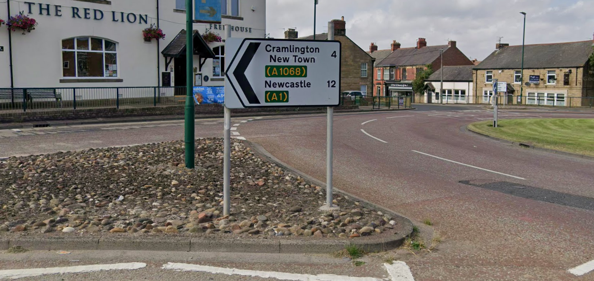

The story behind the mysterious Cramlington New Town sign in the centre of Bedlington
1ST AUG 2025
CramlingtonNews Editors
If you've ever driven into Bedlington, you've probably noticed this sign. It doesn't just say 'Cramlington' like any other sign, but it is instead followed by 'New Town' - and there's a good reason for it!

Back in the 1970s, Cramlington was expanding heavily with new houses and a central shopping precinct. However, the people of Bedlington were unaware of this - so a sign was put there saying 'Cramlington New Town'.
This started to make the residents of Bedlington aware that there is a new town forming down the road - opening up hundreds of new job opportunities in the new Dudley Court shopping area. Dudley Court has expanded heavily through the years to become the large shopping centre we know today as Manor Walks!
Many people who currently lived in Bedlington then moved to Cramlington after becoming aware of the town and stayed there ever since. The town is constantly growing as we speak with significant development in the south west of the town, also know as the Arcot development which brings thousands of more homes to Cramlington - and therefore more people!
The sign still stands today as a brief reminder of the history of Cramlington before it became the large town we know today!
Watch the video to find out more and see Cramlington's past displayed in pictures.
@cramlingtonnews If you’ve ever driven into to Cramlington from Bedlington, you may have noticed this sign that is a great reminder of the town’s past - although never officially being recognised as a ‘New Town’! Watch this video to discover the history and reason for the sign, even if it has never even crossed your mind! #cramlington #northeast #history #old #fyp ♬ original sound - cramlingtonnews